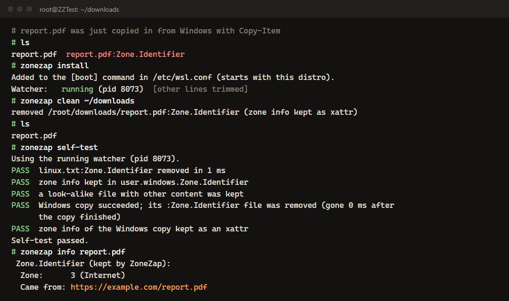

:Zone.Identifier files in WSLCopy a downloaded file from Windows into your distro and a second file, report.pdf:Zone.Identifier, appears next to it, then in git status, Docker builds and backups. ZoneZap is a tiny open-source daemon inside the distro that removes each one about a millisecond after Windows writes it, and keeps the "where did this come from" info on the real file.
Run this inside your WSL distro
curl -fsSL https://boazcohenj.github.io/ZoneZap/install.sh | sudo sh
Real output from an Alpine test distro (install output trimmed): an old leftover cleaned up, then the built-in self-test.
Windows marks downloads with a hidden NTFS stream called Zone.Identifier. Linux filesystems have no hidden streams, so when Explorer, a browser, robocopy or Copy-Item copies a marked file into WSL, the WSL file server writes the stream as a visible file named name:Zone.Identifier. It's been open as microsoft/WSL#4609 since 2019.
ZoneZap puts a single fanotify mark on each local Linux filesystem, so it sees every new file without a watch per folder, and ignores anything not named *:Zone.Identifier or *:SmartScreen.
When Windows closes the stream file, ZoneZap checks it really is a Windows zone marker: a small regular file starting with [ZoneTransfer].
The content goes into the user.windows.Zone.Identifier xattr of the real file (see it with zonezap info), then the stream file is deleted. The copy reports success.
In testing, each stream file was removed about a millisecond after the Windows copy finished: 4,000 files in a row, zero left behind.
No registry tweak, no policy, and no turning off download marking for the whole PC. Only the Linux side is cleaned.
Only small regular files with the exact name pattern and Windows' own content format. Directories, symlinks and your own look-alike files are kept.
sudo zonezap clean sweeps the files you already have, staying on one filesystem. --dry-run lists them first.
A systemd service when systemd is on, otherwise the [boot] command in /etc/wsl.conf, keeping whatever was there. sudo zonezap uninstall undoes it.
sudo zonezap self-test really copies a marked file from Windows into the distro through interop and shows it being cleaned up.
curl -fsSL https://boazcohenj.github.io/ZoneZap/install.sh | sudo sh. It downloads the binary for your CPU, checks its SHA-256 and starts it.sudo zonezap clean.sudo zonezap self-test and zonezap status.sudo zonezap install # start with this distro
sudo zonezap clean # remove old leftovers
zonezap status # running? how many removed?
zonezap info report.pdf # where did it come from?
sudo zonezap self-test # real Windows copy test
sudo zonezap uninstallBoth change Windows security for everything, not just WSL: the first stops marking any download, which SmartScreen and Office's Protected View rely on; the second lowers the zone of everything served from WSL. They also only help with files downloaded afterwards, and people in #7456 report they don't always work.
That works, but the files sit there until the next run and every run walks your whole home folder. ZoneZap removes new ones as they appear without scanning, and zonezap clean is the one-off sweep.
Filesystem-wide fanotify needs root. ZoneZap opens the folder by handle, never follows symlinks, only unlinks the matching entry in that folder, and only if it passes all the checks. It's about 1,700 lines of C you can read, with unit tests, built by GitHub Actions.
Idle, it uses no CPU and under 200 KB of memory. During an 8.5-second robocopy of 2,000 marked files it used 0.27 s of CPU in total.
Windows 11, WSL 2.7.13, kernel 6.18, Alpine 3.24 (no systemd) and Ubuntu 24.04 (systemd): Explorer's copy engine, Copy-Item, cmd copy and robocopy, 2,000-file copies, autostart after a restart, the safety rules, and clean. Not yet: Debian, Fedora, real arm64 hardware (CI builds and self-tests arm64), the Docker Desktop distro.
The issue has been open for years and the answers are registry tweaks, security trade-offs or "just delete them".